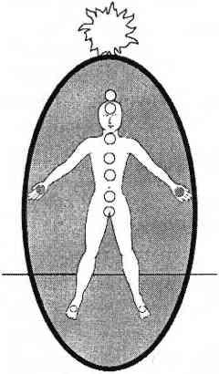

EL ÇAKRALARI
Avuçlarınızın tam ortasında el çakralarınız bulunur. Koşullara göre etki edici ya da kabul edici olurlar. Bir tedavi sırasında ya da sanatsal bir faaliyette el çakralarınız enerjiyi bedeninizden kanalize eder ve dış dünyaya doğru yönlendirirler. Yoğun bir çalışma sırasında, sevişirken ya da meditasyon yaparken elleriniz dışarıdan gelen enerjiyi ve bilgiyi bedeninize yönlendirir.
Eğer ellerinizden birini ya da ikisini birden kaybetseniz bile bu bilgi siz ait olacaktır. Fiziksel elleriniz gitmiş bile olsa enerji ellerinizle el çakralarınız hala hayatta ve faal olacaktır. Yorumlamaya devam edin.

El çakraları yedi ana çakra gibi değildir. Doğal olarak boyları daha küçüktür (açık olduklarında çapları 5 ila 7 cm arasındadır) ve ana çakralardan daha sık açılıp kapanırlar. Kendilerine özgü bir renkleri yoktur. El çakraları belirli özellikleri olan bir enerjiyi depolamaktan ziyade enerjiyi ileten kanallar olarak görev yaparlar. El çakralarınız kalp çakranıza bağlıdır; genel durumları size bu dünyada verme, alma ve yaratma konularında nerede durduğunuzu gösterir.
Kalp çakranızın durumu, içsel sevgiyi ve sanatsal bilgiyi bedeninizde ve ruhunuzda kanalize etme yeteneğinizle ilintiliyken el çakralarınızın durumu bunları dış dünyada kanalize etme yeteneğinizi gösterir. Elleriniz ve kalbiniz düzgün bir bağlantıdaysa kalp çakrası enerjisinin dışa vurumu elleriniz tarafından kontrol edilir. Bu bağlantı düzgün olduğunda kaçak şifacılık görülmez. El ve kalp çakralarınızı düzgün bağlantılandırma yöntemi bu bölümde anlatılmaktadır.
Şifa verme, sevişme ya da derin meditasyon sırasında kalp çakrası enerjiyi kollar aracılığıyla ellere ve oradan da dışarıya yönlendirir. Bu harikulade, şifalı bir duygudur ancak kalp çakranız fazla uyarılır ve bunun farkında olmaz da böyle enerji iletmekte çok zaman harcarsa durum değişebilir. Eller ve kalp arasındaki bağ bilinçli değilse kalp çakrası kollardan ellere kendini dışarı akıtmak için çarpılır. Kundalini akınındaki gibi azıcık bir kalp enerjisi çok uzun yol gider. Kalp çakrasını yorumlamak ve şifa vermek onu yeniden toparlayarak kalp ve el bağlantısını bilinçli hale getirir.
El çakraları özellikle masaj terapistleri ve sezgisel şifacılar tarafından kullanılır. Bu kişiler genellikle el çakralarını nasıl sağlıklı tutmaları gerektiğini bilmezler; el, bilek, dirsek ve omuz sorunları yaşarlar. Bu sorunlar şifacının, müşterisinin enerjisinin elleri aracılığıyla kendi bedenine girmesine izin verdiği anlamına da gelebilir.
Şifacılar bu el çakraları sorununu yaşayan yegane kişiler değildir. Temizlikçiler, yönetici sekreterleri, ilkokul öğretmenleri ve her tür psikolojik danışman her türlü sıkıntı enerjisini emmeye meyillidir; temizlik sırasında, yazıları temize çekerken veya insanlara dokunduklarında kötü enerjiye açıktırlar. El çakralarının vakum yaptığının belirtileri el kol ağrısı, omuz tutulması, kollarda ve sırtta zayıflık, kalp bölgesinde acıdır.
Bedeniniz, başka insanların enerjisiyle, dikkatiyle, sorunlarıyla ve dilekleriyle dolmaktan hoşlanmaz. Acı çekerek ve çalışmayarak tepki gösterir çünkü başka insanların sorunları ile dolduğunda görmezden gelineceğini bilir. Eğer empatik el emiciliği alışkanlığınız varsa bedeniniz bir süredir bundan şikayet etmektedir, özür dileyin, doğru el kalp bağlantısı yapmayı öğrenin ve bu huyunuzu bırakın.
KAPALI YA DA AÇIK EL ÇAKRALARI
El çakraları sürekli olarak açılıp kapanırlar ve her dakika açıklık derecelerini değiştirirler. Bu açıdan bakıldığında el çakraları diğer yedi ana çakradan çok daha aktiftirler. Eğer çakra sisteminiz sağlıklı ve hizadaysa ama el çakralarınız ardına kadar açık ya da sımsıkı kapalıysa ellerinizi birbirine sürtün ve el çakralarındaki değişime bakın. Ellerinizi birbirine sürtmek bu çakralara enerji gelmesini sağlar ve genellikle onları dikkate davet eder. Bir yorumlama ya da çakra kontrolü sırasında el çakraları 5 ila 7 cm çapında açık ve çalışmaya hazır durumda olmalıdır.
Sağlıksız bir çakra sisteminin içindeki sürekli açık el çakraları el eklemlerini ve kaslarını etkiler. Bunları normalden daha zayıf hale getirerek bir şey tutmayı ya da kavramayı zorlaştırır. Ellerde olması gereken bütün enerji akıp gider ve elleri zayıf düşürür. Sakar insanların ya da ellerini sürekli çarpan, sıyıran, vuran, yakan insanların genellikle el çakraları fazla açıktır; bu, sağlıklı ve güvenli değildir. Ellerdeki bu zayıflık genellikle çok açık kalp çakrası olan kaçak şifacılarda görülür.
Açık el çakraları bazı işleri yaparken örneğin şifa verirken ya da sanatsal faaliyetler sırasında gereklidir ancak sonradan el çakralarınızı kapayabilmelisiniz. Aldığınız öğreti kalp çakrası becerilerine ve karşılıksız sevgi vermeye dayandırılmışsa, el çakralarınız yirmi dört saat boyunca açık olacak ve kalp çakrası enerjisi akıtacaktır. Bunun sonucunda kalp çakranız sağlıklı yuvarlak şeklinden yassı dörtgen bir şekle dönüşecektir. Bu duruma gelen bir kalp çakrası genellikle kollardan akıp gitmektedir.
Daha önce kaçak kalp çakrasını kapama yöntemini konuşmuştuk. El çakraları ile çalışmak kalp çakrasını yeniden dengeleyebilmek için hayati önem taşır. El çakralarını kapamak mümkündür; sadece basit bir şekilde elleri yumruk yapıp sıkmak kalp çakralarının akmakta olduğu yolu tıkayacaktır. El çakralarınız kapandığında kalp enerjiniz bedeninizde kalmalıdır. Bu başlangıçta rahatsız edici olabilir özellikle de varoluş nedeninizi sadece başkalarını sevip şifa vermeye dayandırmışsanız iyileştirme enerjinizi ne yapacağınızı, kendinize nasıl yönlendireceğinizi bilemezsiniz. Hatta kendinize vermek istemezsiniz. Ama gene de yapın.
Kendinize enerji vermek için hayata daha güzel yanlarından bakın. Ev yapımı yemeklerle beslenin, kendinize zaman ayırın, zamanınızı alan şeylerin yarısına hayır diyin ya da kafanızın içindeki odaya özen gösterin. Her gün sevdiğiniz bir şeyi yapmak için kendinize zaman ayırın ne kadar aptalca olursa olsun. Bir boyama kitabı alıp boyayın, garip görünüşlü bir gömlek alın, bir köpek yavrusu ile oynayın ya da hayvanat bahçesine gidin. Azıcık eğlenmeye bakın ve kendinizi görmezden gelmek istediğinizde ellerinizi kalbinizin üzerine koyup tek yanlı bir iyileştirme ilişkisine girin. Kelimesi kelimesine söylemek gerekirse hayatınızı ellerinize alın.
Açık el çakraları da akma işleminin tersi olan vakumlamanın içine dahil olabilir. El çakraları bedene doğru enerji vakumlarken kalp çakrası yayılmış ve uzamış halde olmayacaktır. Böyle bir durumda kalp çakrası genellikle parlak ve küçüktür. Yuvarlak olmayı reddederek kare haline girmiş olabilir. Her çakrada köşelerin oluşması huzursuzluğa işaret eder. Yanlış enerjilerden kendilerini korumaya çalışan ya da çalışmalarını engelleyen inanç sistemlerine karşı çıkan çakralar genellikle köşeler ve açılar oluştururlar.
Karelere bölünmüş ya da çok köşeli bir çakra gelen enerjiyi kabullenen kıvrımların yerine sivri açılar oluşturarak gelen enerjiyi geri tepmeye çalışır. İki kendini bilmez elin arasında sıkışmış olan kalp çakrası kendini savunmaya geçer, geçmesi de lazımdır. Fiziksel belirtiler sırt ağrısı, nefes alma sorunu ve kalbi korumak için işin içine giren üçüncü çakra dolayısıyla her türlü sindirim sistemi rahatsızlığıdır.
Vakumlu el çakrası şifacıları, bir tedavi uyguladıktan, temizlik yaptıktan, organizasyon yaptıktan sonra ya da danışmanlık seansı sırasında veya sonrasında tam bir bitkinlik yaşarlar. Vakumlu el çakrası şifacıları sonunda çökmeye mahkumdurlar. Neyse ki bu bölümde öğretilen el kalp çakraları bağlantısını düzeltme yöntemi bu tür şifacılara yardımcı olur.
Sımsıkı kapatılmış el çakraları eklemleri ve kasları sertleştirip şişirir. Bu, yaratma ve verme yeteneklerinde bir sakatlanmaya ve mafsal iltihabına işaret eder. Eğer el çakralarınız sımsıkı kapatılmışsa bedeninizdeki enerji akışı olumsuz olarak etkilenecektir. Küçücük bir resmi boyayamıyorsanız ya da piyanoda ritmik olarak üç tuşa basamıyorsanız o zaman lütfen elinizdeki akışı sağlamak için başka bir yol bulun. Ellerinizle bir şey pişirebilir, bir mobilya ya da araba parçasını temizleyip restore edebilir, birisinin omuzlarını ovabilir, saçını kesebilir, yoga yapabilir veya bir hayvanı okşayarak zaman geçirebilirsiniz. Ellerinizle kalbinizi doğru bağlantılandırmak için konsantre olun ve enerjinizin yeniden akmasını sağlayın. Eğer el çakralarınız kapalıysa enerji akışı yeniden başlayana kadar günde iki kez kalpten ele şifa yollayın.
El çakraları da sağlıklı çakra tatiline çıkabilirler. Ama her daim meşgul oldukları için bir iki günden fazla tatil yaptıkları görülmemiştir. El çakralarınızın tatile çıkmış olduğunu kalp çakrasının sağlıklı yuvarlak şekline bakarak ve aynı zamanda kollarınızda, ellerinizde, parmaklarınızda el çakralarınızın kapalı olmasına karşın duyduğunuz rahatlıktan anlayabilirsiniz.
El çakralarınız, yeni öğrenilen, doğru iyileştirme ve kendini sevme bilgilerini işleme koymak için işten çekilirler. El çakralarınız kapanarak kalp çakranızın enerjisinin bedeninizde kalmasını sağlamak için bir süreliğine verici şifacı rolünden soyunmanızı sağlar. Ancak el çakralarınız gerek duyduğunuz zaman orada olmalıdır bu yüzden günde iki üç kere kontrol edin ve diğer bütün çakralarınıza özellikle de kalp çakranıza teşekkür hediyeleri sunun. Çakralarınızın yarattığı denge ve iletişimle, el çakralarınıza bu tatil imkanını verdikleri için onlara minnettar olduğunuzu bilmelerini sağlayın.
Ellerinizi topraklanmış nöbetçi eldiveniyle sarın ve yeniden açılmak için nasıl bir enerji desteği istediklerini sorun. Bunu genellikle size elle gösterirler. Bakıp öğrenin.
EL ÇAKRALARINI KALP ÇAKRASINA BAĞLAMAK El ve kalp çakraları çoğu insanda doğal olarak birbirine bağlıdır ama bu bağlantının niteliğini kontrol etmekte fayda vardır.
Özellikle de kalp çakrasında sıkıntılı bir durum ya da bir şekil bozukluğu varsa; ellerde ve kollarda tutukluk, kramp girmesi ya da sıklıkla sakarlık söz konusu oluyorsa.
Eller ve kalp arasındaki bağlantı sağlıklı bir kalp çakrasından başlar, demek ki kalp çakrasının iyileştirilmesi bu işlemdeki ilk adımdır. Kafanızın içindeki odada odaklandığınızda kalp çakranızı, dairesel, zümrüt yeşili, 7 ila 13 cm çapında bir enerji merkezi olarak hayal edin. Şimdi avuçlarınızın ortasındaki el çakralarınızı mümkün olduğunca açık ve dairesel olarak hayal edin. Açık el çakralarınızın çapı 5 ila 7 cm arasında olmalıdır, yani avuçlarınızın ortasına rahatça sığmalıdır.
Gözlerinizin arkasında otururken kalbinizdeki zümrüt yeşili enerjinin bir bölümünün omuzlarınıza doğru gittiğini düşünün. Kalp çakranızın yuvarlak ve normal boyutta kalmasına dikkat edin. Kalbinizin enerjisini almadığınızı sadece onun sonsuz enerjisinin bir kısmını yönlendirdiğinizi düşünün. Kalpten gelen zümrüt yeşili enerjinin omuzlarınızdan aşağıya her iki kolunuza doğru gittiğini görün. Enerjinin kemiklerinizden, dirseklerinizden kollarınızın alt kısmına geçtiğini hissedin. Kafanızın içinde kalın ve kalp çakrası enerjinizin bileklerinizden avuçlarınıza geçerek oradaki tıkanıklıkları itip açtığını görün.
El çakralarınız kalp çakranıza bağlandığında ellerinizde bir basınç ve sıcaklık hissedersiniz. Eğer hissetmiyorsanız o zaman ellerinizde ya da kollarınızda hala bir tıkanıklık var demektir. Tıkanıklığı açmak için ellerinizi içinde sıcaklık hissedene kadar birbirine sürtün. Şimdi kollarınızı aşağıya sarkıtın ve karıncalanan ağırlıklarını hissedin. Bu kalp çakranız avuçlarınıza aktığında hissetmeniz gereken duygudur.
Ellerinizi tekrar birbirine sürtün. Isındıkları zaman kalp çakra enerjinizi kollarınıza geçirmek için kullanın. Sağ elinizi kalbinizden birkaç santimetre uzakta tutun ve üzerinde, sanki kalp çakra enerjinizi karıştıran bir daire hayal edin. Sağ elinizi kullanarak kalp çakranızın yeşil enerjisinin bir bölümünü sol omzunuzdan aşağıya yavaşça hareket ettirin. Sol avucunuza geldiğinizde sağ elinizi o elin üzerinde bir daire çizmek için kullanın. Sol el çakranızın yeşil enerji ile dolduğunu görün.
Sol el bağlantınızı yaptığınızda sağ elinizi aşağı bırakın ve sol elinizi sağ elinize enerji getirmek için kullanın. Eğer bilinçsiz bir vakum şifacıysanız enerji kendi başına akmaya başlayıncaya kadar bu bağlantıyı günde birkaç kez yapmanız gerekebilir.
Kollarınızı ve ellerinizi hareket ettirin. Avuçlarınızı açıp kapayın ve enerjinin akışının farklılığını hissedin. Avuçlarınızı bedeninizde rahatsızlık duyduğunuz herhangi bir noktaya koyun ve kendi üzerinizde küçük bir kalp çakrası tedavisi uygulayın. Ellerinizi kalp çakranızın üzerine koyun, kalp çakranızda dengesizlik hissederseniz devreyi kapatarak sevginizi kendinize verin.
Ellerle kalp bağlantısını daima yapın ama geçmişinizde kaçak şifacılık varsa kalp enerjinizin bilinçsizce ellerinizden akıp gitmesine izin vermeyin. Çevrenizdeki enerjiyi de emmeyin. Kalbiniz bilinçli bir şekilde ellerinize bağlı olduğunda; kalp enerjinizin farkında olduğunuzda; enerji kontrolünüz altında olduğunda kaçak şifacılık ve sünger el Şifacılığı oluşması küçük bir ihtimaldir. Ancak bu hala bir tehlikedir. Çok açık el çakraları ve ikinci çakra Şifacılığı hakkındaki uyarıları bir daha okuyun.
Şifa enerjinizi bedeninizde tutmakta zorlanıyorsanız o zaman bir ay boyunca ellerinizi sabah akşam her gün birer kez kalp çakranızın üzerine koyun. Kalbinizin sizden özellikle şifa istememiş birine doğru gittiğini hissederseniz ellerinizi çabucak kalp çakranızın üzerine koyun. Kendinize herkesin kendi şifa enerjisi olduğunu hatırlatın. Şu anda dünyayı iyileştirmeniz gerekmiyor önce kendinizi iyileştirmelisiniz.
Artık elleri ve kalbi bağlamayı bildiğinize göre çakra kontrolü yaptığınızda, çakra yorumlarken ya da altın güneş tedavisini uyguladığınız her sefer bu bağlantıyı kontrol edin. Kalp çakranızın omuzlarınızdan aşağı enerji yollarken asla yassı bir kareye dönmemesi gerektiğini sakın unutmayın. Ellerle bağlantılı olan kalp çakrası enerjisinin bir bölümü topraklama kordonu olarak aşağıya doğru yönlendirildiğinde bile sağlıklı ve yuvarlak kalmalıdır. Ellerinizin bilinçsiz olarak enerji emmesine izin vermeyin. Bu sadece kalp çakranızda ve çakra sisteminizin geri kalanında tahribat yaratacaktır. Kendinize zarar vermeyi bırakın.
SAĞLIKLI EL ÇAKRALARININ ÖZELLİKLERİ
El çakraları sağlıklı olan insanların elleri sağlıklı çakra sistemlerinin bilgilerini dış dünyaya tercüme eder. Doğal olarak veren ve şefkat gösteren ellerdir ama bir boyutları daha vardır ki o da almaktır. Odaklarını kaybetmeden yardım, iltifat, hediye ve yapıcı nasihat alabilirler. Aynı zamanda tüm bunları başkalarında borçluluk, suçluluk ya da karşılıklı şikayet hissi yaratmadan verebilirler de.
Sağlıklı el çakraları, sahiplerine doğal bir yaratıcılık bahşeder. Bu kişilerin yaratıcılığı akar. Dramatik artistik tıkanıklıklar ya da ilham yoksunlukları çekmezler. Giyinmek, yemek pişirmek, ev dekorasyonu, araba tamiri gibi merakları vardır. Artistik yeteneklerinin onaylanması için hocalara ya da kuruluşlara bel bağlamazlar. Dünya ve çevrelerindeki insanlarla rahat bir alışveriş ilişkileri vardır. Aynı zamanda kendi enerjileri ile rahat bir alışverişleri vardır ve sürekli muhtaç yaşamaktan hoşlanan kişilerle bir aradayken el çakralarını kapayarak kendilerini korumasını bilirler.